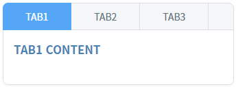
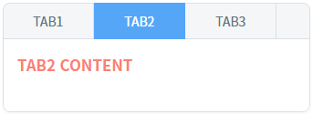
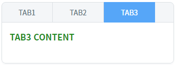

TabControl의 'setSelectedTabIndex' 메소드를 사용하여 탭의 인덱스로 탭을 선택한 예제입니다. 이 메소드는 비동기로 실행되기 때문에 탭 선택이 완료된 후 로직을 구성해야 한다면 키워드 'await'와 'async'를 사용해야 합니다. 아래의 4 구현 예시를 통해 스크립트를 확인할 수 있습니다.
탭의 Index로 탭 선택하기
1
STEP 1: 초기 상태를 확인합니다.
TabControl에 3개의 탭이 구성되어 있고, 첫 번째 탭 'TAB1'이 선택된 상태입니다.
Image 1.브라우저(Chrome) 실행 예시

2
STEP 2: 탭의 Index가 1인 탭을 선택합니다.
'Index가 1인 탭 선택하기 - await 사용' 버튼을 클릭합니다.3
STEP 3: 실행된 결과를 확인합니다.
두 번째 탭 'TAB2'이 선택됩니다.
Image 2.브라우저(Chrome) 실행 예시

4
STEP 4: 탭의 Index가 2인 탭을 선택합니다.
'Index가 2인 탭 선택하기' 버튼을 클릭합니다.5
STEP 5: 실행된 결과를 확인합니다.
세 번째 탭 'TAB3'이 선택됩니다.
Image 3.브라우저(Chrome) 실행 예시

TabControl의 'setSelectedTabIndex' 메소드를 사용하여 스크립트를 작성합니다. 이 메소드는 비동기로 실행되기 때문에 탭 선택이 완료된 후 로직을 구성해야 한다면 키워드 'await'와 'async'를 사용해야 합니다. 메소드 선언은 아래의 스크립트 예시에 작성되어 있습니다.
Example 1.Script - async, await 사용
//이 메소드는 TabControl의 'setSelectedTabIndex' 메소드가 실행이 완료된 후 로직을 구성할 때의 예시입니다. scwin.btn_exam1_1_onclick = async function (e) { // TabControl 'tac_exam1'의 2번째 탭을 선택합니다. await tac_exam1.setSelectedTabIndex(1); // 탭 선택 이후 진행할 로직을 구성합니다. };
Example 2.Script
//이 메소드는 TabControl의 'setSelectedTabIndex' 메소드가 실행의 완료 여부와 무관하게 로직을 구성할 때의 예시입니다. scwin.btn_exam1_2_onclick = function (e) { // TabControl 'tac_exam1'의 3번째 탭을 선택합니다. tac_exam1.setSelectedTabIndex(2); // 탭의 선택 완료 여부와는 무관하게 로직을 구성합니다. };
setSelectedTabIndex( tabIndex )